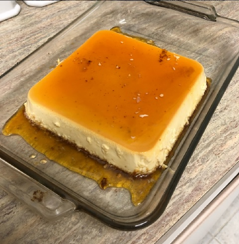

This is a quick and easy baked flan recipe that is prepared in the blender. It's great served warm or cold and has a creamy texture like custard. Slice the flan and spoon a little of the melted sugar onto the top of the slice.